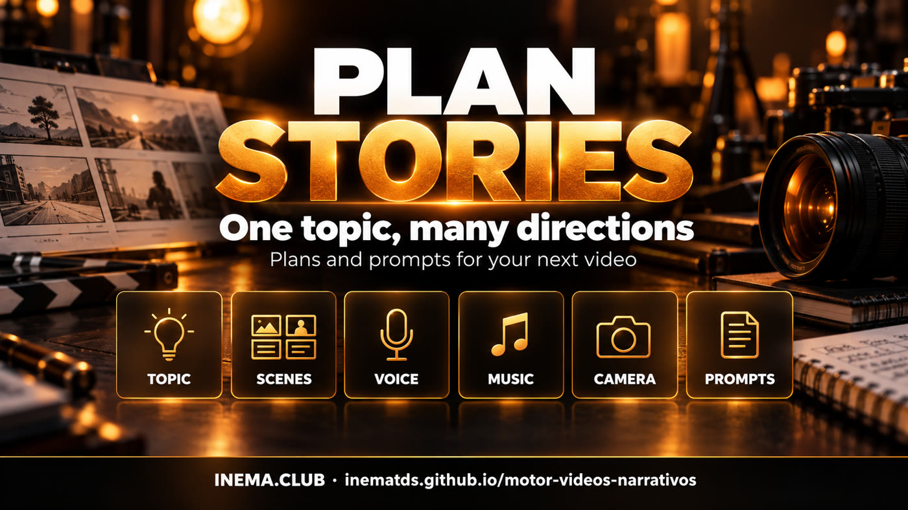

Plan the direction of your next video with scenes, timings and prompts ready to develop.
A Python tool for planning educational and narrative videos. Starting from a topic, it organizes scenes, estimated timings and guidance for images, voice and music into two files. Local history helps vary choices between projects. All you need is Python 3.9 or later: plans are created offline, without an API key. The final script, audio and video are produced later using other tools.
The engine delivers a brief. You review the narrative and choose how to produce each scene.

Origin and legacy, myth and revelation, problem and solution, reverse chronology, places and an object as witness.
One main style and two supporting styles, with guidance for camera work, transitions, text and sound.
History avoids some recent choices. Once the options run out, the engine may repeat them.
Choices are drawn from configured options, taking history into account. The engine does not research the topic or automatically assess whether each choice suits it.
No packages to install. Git is useful for downloading the repository; you can also download the ZIP from GitHub.
python3 --version
The commands below use Portuguese examples. The engine interface and generated text remain in Brazilian Portuguese.
Open a terminal in the folder where you want to keep the files.
git clone https://github.com/inematds/motor-videos-narrativos.git cd motor-videos-narrativos python3 motor_video.py --help
Accepted durations range from 20 to 600 seconds. Portrait, square and landscape formats are available.
python3 motor_video.py --tema "Como o café chegou ao Brasil" --duracao 60 --formato 9:16 --objetivo "educar e gerar curiosidade" --publico "público geral" --cta "Comente o que você descobriu"
The terminal shows the folder created inside jobs/. The plano.json file organizes the data; prompt_pack.md presents each scene and the checklist. The history.json file is created automatically in the project root.
python3 motor_video.py --tema "Por que as cidades antigas surgiam perto dos rios" --duracao 45 --formato 16:9 --seed 20261011 --voz informative_warm --out jobs/meu-plano
Use a new folder for --out: existing files with the same names are overwritten. To repeat choices, keep the same seed, arguments, configuration and input history; the seed alone is not enough. The date and identifier may change.
Fill in the spoken-text placeholders, check the facts and review the creative direction. Then produce the narration and measure its duration to adjust the scenes. Images, music, captions, editing and MP4 export are handled outside the engine.
python3 -m json.tool jobs/meu-plano/plano.json
These are production plans, without a final script or rendered video. The original materials are in Portuguese.
Read the reference audiovisual DNA (Portuguese) · Read the original proposal (Portuguese)
The original Portuguese documents describe the intended workflow and reported measurements of the reference. They are not evidence of rendering by this script. The reference media is not included in the supplied package.